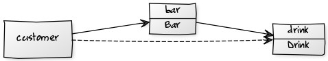
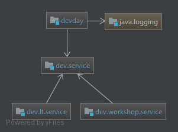

Java 10 - Moduły
Created by Piotr Szerszeń
Modułość jest zasadą projektowania która pomaga nam osiągnąć:
- luźne sprzężenie pomiędzy modułami
- czysty kontrakt izależności pomiędzy komponentami
- ukrytą implementację za pomocą silnej enkapsulacji
Definicja modułu (plik module-info.java) zawiera
- jego nazwę
- pakiety, które upublicznia
- moduły, od których zależy
- serwisy, których używa
- implementacje serwisów, które dostarcza
Słowa kluczowe
module
Definicja modułu rozpoczyna się od słowa module i nazwy modułu
Słowa kluczowe
requires
Służy do wskazania modułów, od których zależy; nazwa modułu musi być określona po tym słowie kluczowym
Słowa kluczowe
transitive
Jest określony po słowie kluczowym require; oznacza to, że każdy moduł, który zależy od definiowanego modułu, wymaga przechodniego nazwa_modułu uzyskuje ukrytą zależność od nazwa_modułu

Słowa kluczowe
exports
Służy do wskazania pakietów w module dostępnych publicznie; nazwa pakietu musi być określona po tym słowie kluczowym.
Słowa kluczowe
opens
Służy do wskazywania pakietów, które są dostępne tylko w środowisku wykonawczym, a także są dostępne do introspekcji za pośrednictwem interfejsów API Reflection; jest to dość znaczące dla bibliotek takich jak Spring i Hibernate, w dużym stopniu polegających na interfejsach API Reflection; opens może być również użyty na poziomie modułu, w którym to przypadku cały moduł jest dostępny w czasie wykonywania.
Słowa kluczowe
uses
Służy do wskazania interfejsu usługi, którego używa ten moduł; nazwa typu, tj. pełna nazwa klasy / interfejsu, musi być określona po tym słowie kluczowym.
Słowa kluczowe
provides … with ...
Służą one do wskazania, że moduł zapewnia implementacje określone po słowie kluczowym with dla interfejsu usługi określonego po słowie kluczowym provides.
Przykład
- dev.service - wystawia interfejs serwisu
- dev.workshop.service i dev.lt.service - dostarczają implementacji w.wy. interfejsu
- dev.day - "zbiera" z classpath`a implemenacje serwisu z dev-service, wywołuje metode interfejsu i loguje do konsoli

Let's get in touch
Piotr Szerszeń
pszerszen@pgs-soft.com
 https://github.com/pszerszen/java10-modules
https://github.com/pszerszen/java10-modules